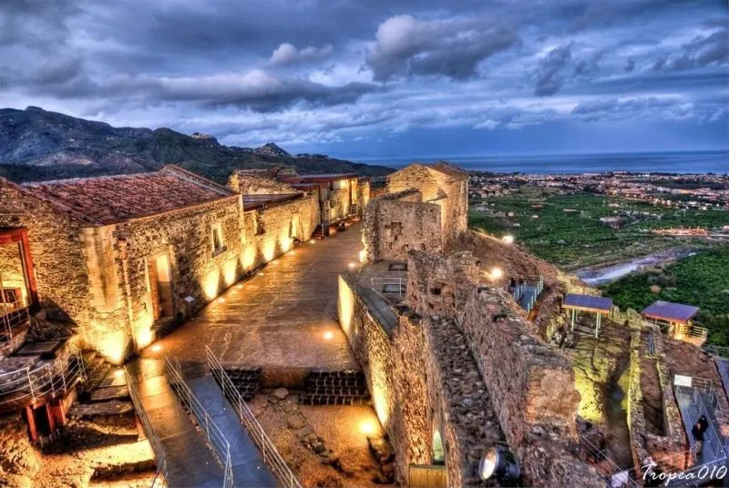
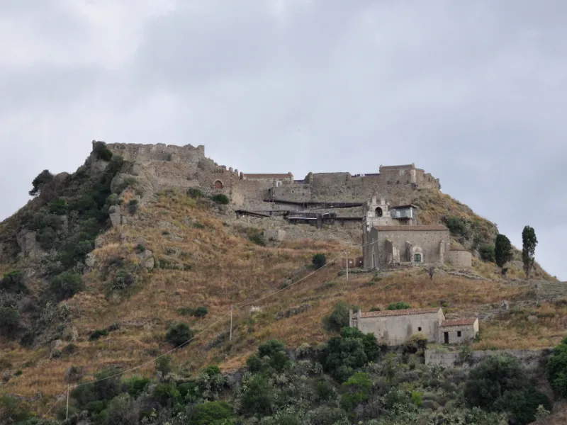
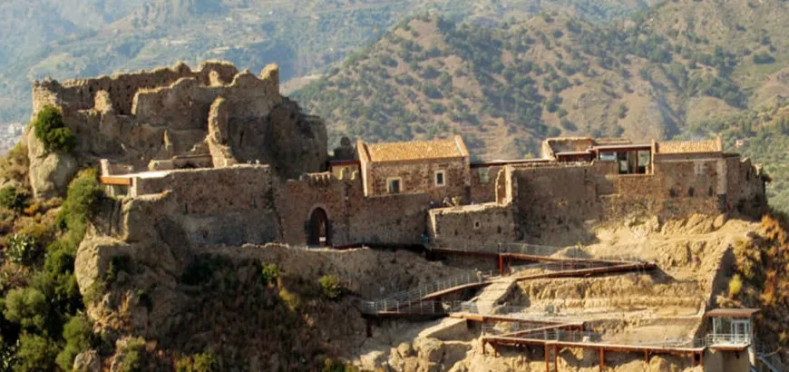
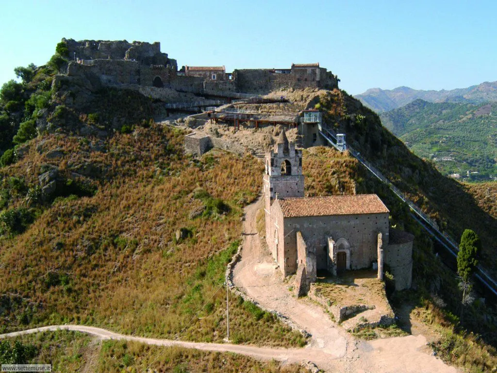
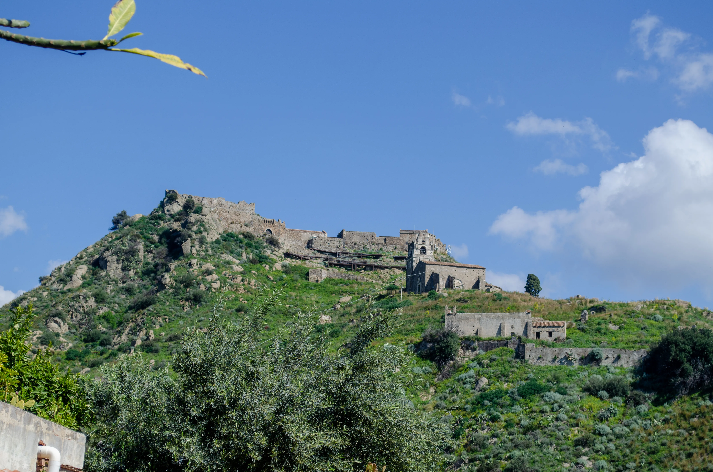
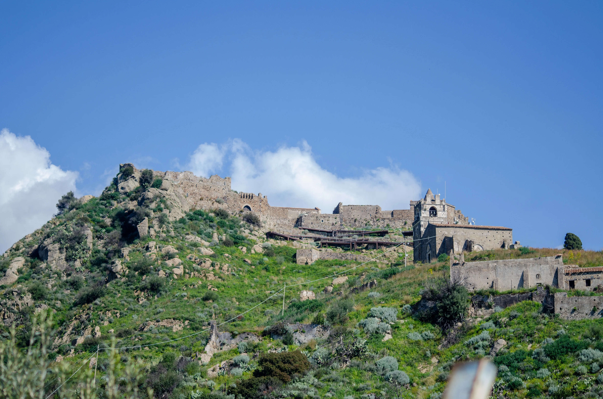
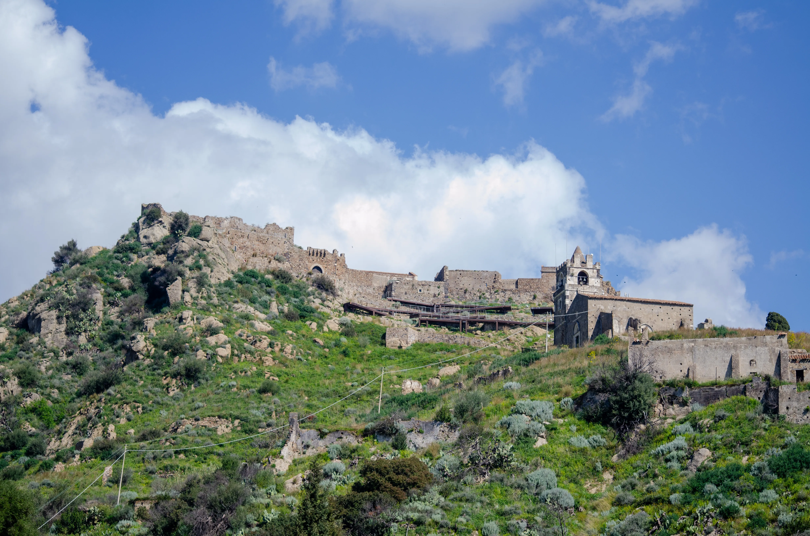
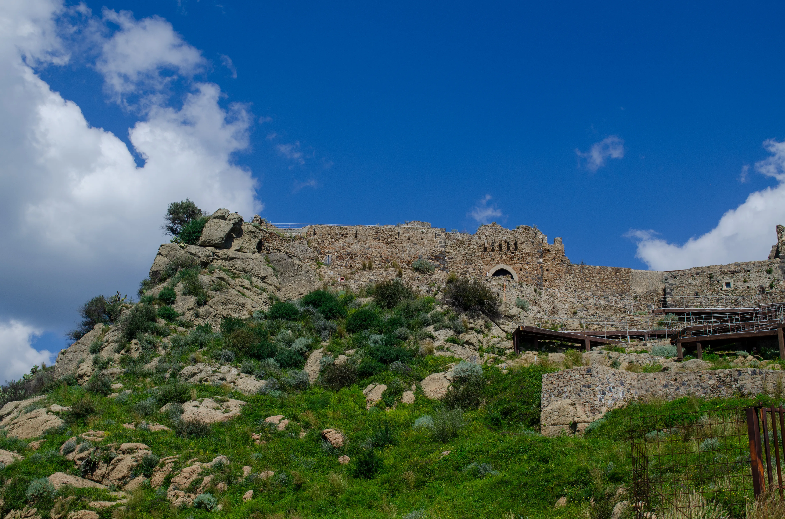
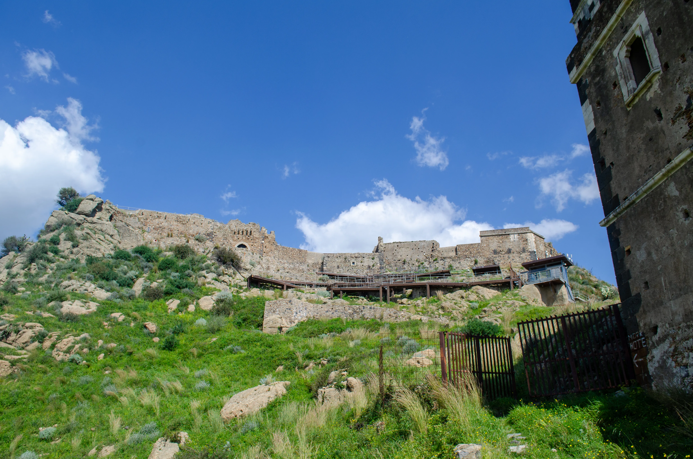

Sul Castello di Calatabiano, tra le poche certezze storiche tramandate, vi è la sua origine araba. Si ritiene che sia stato edificato intorno al IX secolo da un hakim di nome Al-Bian. La sua storia è ampia e affascinante: alcuni ritrovamenti archeologici, tra cui monete di epoca romana, fanno pensare che il sito fosse frequentato o già occupato in tempi ancora più antichi. Nel corso dei secoli il castello visse anche la dominazione normanna e passò nelle mani di diversi proprietari. Il periodo di maggiore splendore fu quello legato alla famiglia Cruyllas, sotto la quale la fortezza assunse grande prestigio e importanza strategica. La struttura ha subito i danni causati da numerosi terremoti, ma nonostante ciò continua ancora oggi a dominare con imponenza il territorio di Calatabiano. L’accesso al castello avviene attraverso un portale ad arco a sesto acuto, che conduce a un cortile di forma rettangolare sviluppato sul lato sud-ovest. Da qui è possibile raggiungere diverse aree della fortezza. Tra gli ambienti più significativi vi è il grande salone, dal quale due importanti finestre regalano una splendida vista sulla Valle dell’Alcantara. Sempre dal cortile si accede anche alla parte più antica del complesso, delimitata da un muro con porta d’ingresso: qui sorgeva il mastio, la torre principale e più fortificata, tipica dei castelli medievali. Il castello comprendeva inoltre ambienti residenziali, antichi servizi igienici e una cappella, nel cui catino absidale sono ancora visibili tracce dell’affresco originario raffigurante il Cristo Pantocratore. Nel cortile si trovano diverse cavità scavate nella roccia, molte delle quali utilizzate per la raccolta dell’acqua piovana, necessaria per sopperire all’assenza di sorgenti naturali sul luogo. Le decorazioni ancora oggi visibili all’interno appartengono in parte all’epoca tardo-barocca. Al suo interno sono stati inoltre rinvenuti diversi reperti, tra cui resti ossei e oggetti appartenuti alle famiglie nobili del tempo. Il Castello di Calatabiano rappresenta un elemento fondamentale per la storia e l’identità del paese. È simbolo di radici profonde, tradizioni tramandate nei secoli e di una civiltà antica che ha contribuito a rendere questo luogo una preziosa gemma del territorio catanese.